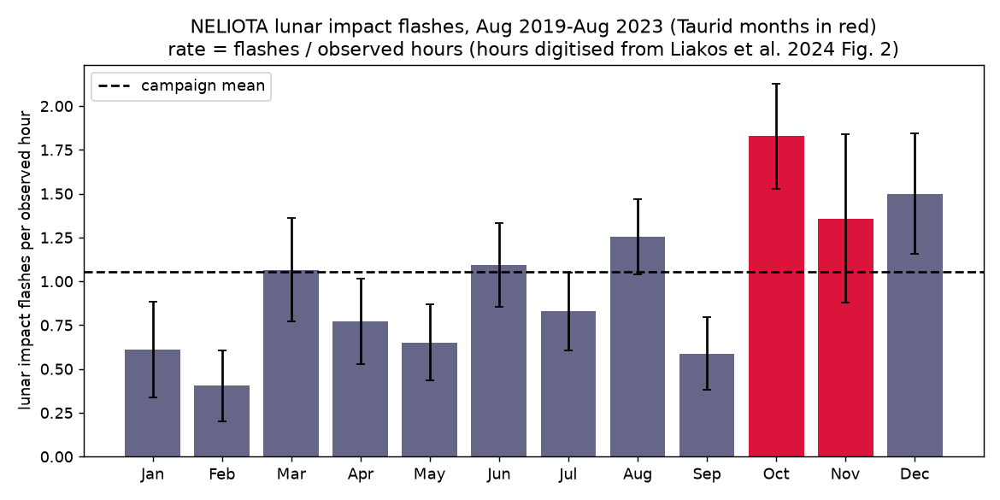
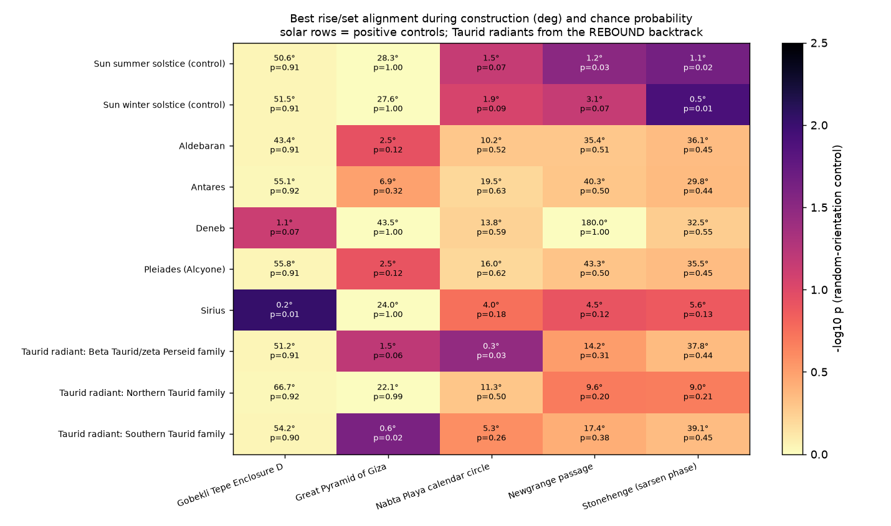
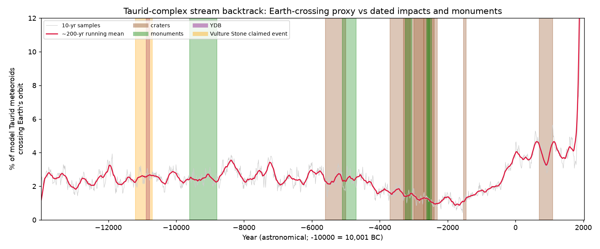
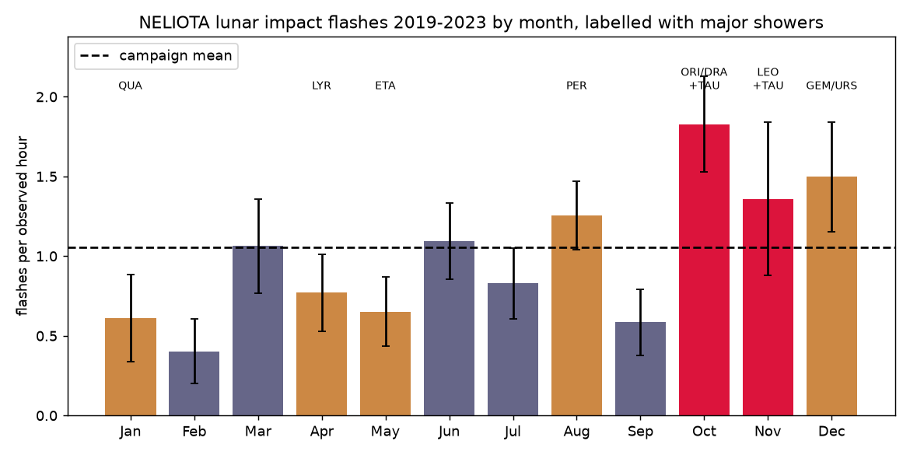
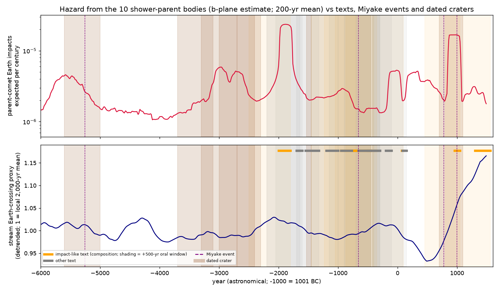
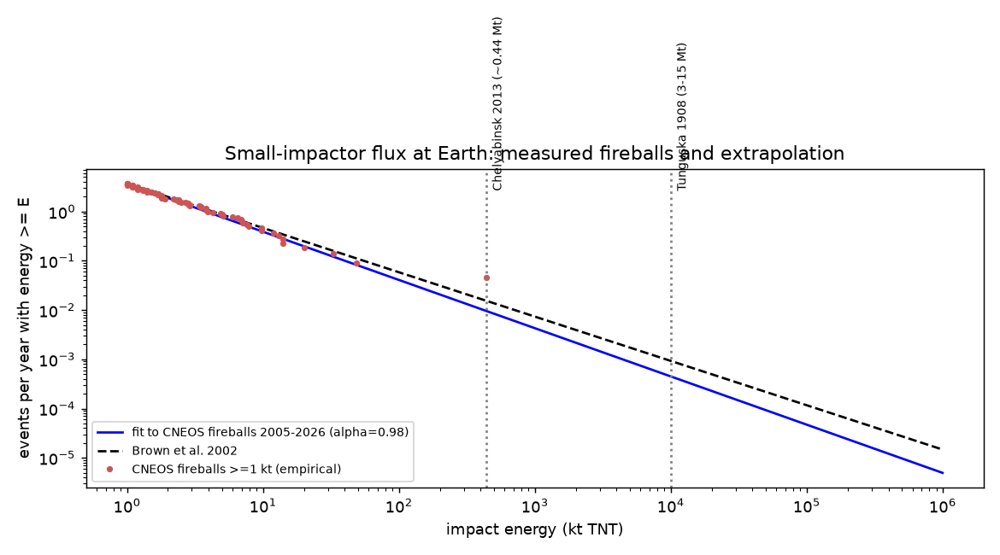

Moon
p = 0.0005
Oct–Nov flash rate 1.84× other months. 16 Taurid-tagged flashes on 29–31 Oct 2022, a predicted swarm year. Sporadic flashes show no excess (p = 0.40).
Impact Hypothesis · Phases 2–4 · 27 November 2026
We tested whether the Taurid / Encke meteor stream lines up with dated impacts on Earth, the Moon and Mars, and whether ancient monuments were built or carved to commemorate those events. Every historical test used a random-date or random-orientation control. The one clear signal is on the Moon today. The Holocene craters, Mars, the monuments, the Vulture Stone “date stamp,” and the Younger Dryas boundary all come out null or inconclusive.
Read the Taurid findings · Scorecard · Taurid report (PDF) · Part 2: Streams, Myths, Sun & the Next Big One · Cataclysm report (PDF)
Loading catalog…
Times are America/New_York (Eastern, 24-hour). CNEOS source times are TDB and have been converted.
| Object | Body | Date (ET) | Distance (km) | Distance (LD) | vrel (km/s) | Size | H | PHA |
|---|
Object names link to the official JPL SBDB page. Distances and times in this table are the CNEOS values, converted to Eastern Time and to km / lunar distances (1 LD = 384,400 km). Size is a JPL-measured diameter when one exists; otherwise it is estimated from absolute magnitude H (Fowler & Chillemi 1992) with pV = 0.154, the CNEOS Sentry convention, and a typical albedo range of 0.05–0.25 shown on hover. Click a row to sketch its orbit.
| Object | Date (ET) | CNEOS (km) | Ours (km) | Δ km | Δ min |
|---|
Top-down ecliptic J2000 view of the inner solar system. Planet rings are circular at their mean distances, for scale. The NEO path is a Keplerian ellipse from the JPL SBDB osculating elements — a sketch, not the N-body validation on the left.
The one significant result
The NELIOTA lunar impact-flash survey recorded 16 flashes from Taurid meteoroids on 29–31 October 2022, a year predicted in advance as a Taurid “resonant swarm” return. Across August 2019–August 2023, flashes per observed hour were 1.84 times higher in October–November than in other months (p = 0.0005). October–November ranks first of the twelve two-month windows. That whole excess comes from meteor showers (Taurids plus Orionids). Flashes tagged as sporadic show no October–November excess (ratio 1.09, p = 0.40). The Taurid impactors were roughly 20–250 grams.
Monthly observing hours were digitised from Fig. 2 of Liakos et al. 2024; our total is 172.76 hours against their published 172.9 hours. Validated flashes alone give a ratio of 1.51 (p = 0.051).

Every historical test is against a random-date or random-orientation control. “Significant” means the result is unlikely under that control. “Null” means the data look like chance. “Inconclusive” means the test did not have enough power, or the comparison was chosen after looking at the plot.
Oct–Nov flash rate 1.84× other months. 16 Taurid-tagged flashes on 29–31 Oct 2022, a predicted swarm year. Sporadic flashes show no excess (p = 0.40).
No Taurid-season excess in 1,074 CNEOS fireballs (1988–2026). No excess in predicted swarm years. Holocene craters sit at ordinary stream activity; all seven were iron meteorites, not cometary debris. The Younger Dryas boundary is also consistent with chance (p = 0.30).
Taurid orbits do pass close to Mars, but among 80 fresh craters dated to within about six months, the count at those orbital crossings matches chance (ratio 1.00). Most Martian dating windows are years long, so the test has little power.
The method finds the known solstice alignments at Stonehenge, Newgrange and Nabta Playa. Taurid-radiant alignments look like chance (2 of 15 tests under p = 0.05, where 0.75 are expected). Construction dates are not unusually high in Taurid activity (p = 0.98).
The summer-solstice Sun stood over the Sagittarius “teapot” spout about 300 years before the claimed 10,950 BC, and Enclosure D was built 1,350–2,150 years after the claimed event. Several equally valid readings of the pillar make a chance hit on the Younger Dryas unsurprising (9–31%).
In the NASA/JPL CNEOS fireball catalog, the Taurid activity window (solar longitude 168–258°) holds 263 of 1,074 events against 268.5 expected (ratio 0.98, p = 0.66). The narrower “core” window and the June daytime β Taurids are also consistent with a uniform year. Predicted swarm years (1995, 1998, 2005, 2008, 2015, 2022, 2025) show no excess (odds ratio 1.12, p = 0.35).

Southern and Northern Taurid orbits pass within about 0.01–0.06 au of Mars’s orbit, at Mars heliocentric longitudes near 0–30° and 270–295°. We compared 1,203 dated new Martian craters (Daubar et al. 2022) with those crossing longitudes. The 80 craters with formation windows of 172 days or less had 6.46 expected impacts in the bands versus a null of 6.47 ± 1.54. Ratio 1.00, p = 0.49.

We rebuilt the precession-corrected sky (Vondrák, Capitaine & Wallace 2011) at the construction dates of Göbekli Tepe Enclosure D, the Great Pyramid, Stonehenge, Newgrange and the Nabta Playa calendar circle, and asked how close each axis came to the rising or setting of the Sun, several bright stars, and the Taurid radiant of that era (taken from the backtrack). Two controls: windows of the same length placed at random between 12,000 BC and AD 1, and the monument’s axis set rotated at random.
The solar test is the positive control, and it works: Stonehenge, Newgrange and Nabta Playa recover their published solstice alignments (3 of 10 solar tests p < 0.05; combined p = 0.012). Taurid radiants do not: 2 of 15 tests came in under p = 0.05, where 0.75 would be expected by chance (combined p = 0.17), and neither “hit” is convincing on its own. Giza’s due-east axis will match any object near the equator; the Nabta match is a daytime shower whose radiant sits next to the Sun and would have been invisible. The Precession Clock already shows how the sky over these sites drifts with time.
Open the Precession Clock — north-pole stars, the equinox drift, and the pre-dawn equinox sky at Giza, Stonehenge and Göbekli Tepe.

Sweatman & Tsikritsis (2017) read Pillar 43 at Göbekli Tepe as a star map, with the vulture as the Sagittarius “teapot,” and dated it to 10,950 ± 250 BC by placing the summer-solstice Sun over the teapot’s spout — close to the proposed Younger Dryas impact. Using the same long-term precession model, the summer-solstice Sun stood over the spout star (γ² Sagittarii) in about 11,250 BC, not 10,950 BC. The teapot as a whole spans 11,250–12,250 BC. Enclosure D was built about 9600–8800 BC, 1,350–2,150 years after the claimed event.
If several equally plausible readings are allowed (which solstice or equinox, which star), a chance hit within ±250 years of the Younger Dryas is not rare: about 9% for four readings, 17% for eight, 31% for sixteen. The pillar can still be symbolic. It is not a dated commemorative stamp of that event.

Hypothesis for a pre-registered follow-up — not a finding
Comet 2P/Encke’s orbit crossed Earth’s in pairs about every 2,930 years: around 11,780 / 11,480 BC, 8,950 / 8,620 BC, 5,760 / 5,420 BC, 2,930 / 2,690 BC, and 60 BC / AD 250. Clone orbits stay coherent; the uncertainty grows from about ±20 years recently to about ±230 years at 12,000 years ago. Outgassing forces are not modelled.
Göbekli Tepe Enclosure D, Newgrange, Stonehenge and Giza each fall within about 250 years of one of those pairs. Against uniform random dates that looks unlikely (p = 0.019). With a fairer control that keeps their real clustering — most of these monuments were built in 3200–2500 BC — the result is not significant (p = 0.17; 0.087 without Giza). We noticed this after looking at the plot, so it is a hypothesis, not a result. The next step is a pre-registered list of monuments and dates, fixed before the comparison is run again. That follow-on work is now published below as Part 2: Streams, Myths, Sun & the Next Big One. We report whatever the data say, including null results.


Hover or tap to read a date. Gold ticks are Encke’s Earth-orbit crossings (a hypothesis for follow-up). Green bands are monument construction windows, brown are Holocene craters, purple is the Younger Dryas boundary, and orange is the claimed Vulture Stone date.
Hover a band, tick or the red curve for details.
These are long-run averages, not a schedule. No data set in this study shows a cycle that predicts when the next impact comes. “Chance next 100 years” assumes a random (Poisson) process at the published mean interval.
| Event class | Mean interval | Chance, next 100 years | Source |
|---|---|---|---|
| ~20 m airburst (Chelyabinsk-class) | 50–100 years | 63–86% | NASEM 2022 (from Harris & Chodas 2021) |
| ≥140 m impact (regional devastation) | ~20,000 years | 0.5% | NEOMOD 3 (Nesvorný et al. 2024); NASEM 2022 |
| ≥1 km impact (global effects) | 570,000–660,000 years | 0.016% | NEOMOD 3. About 95% of this population is already found; none is on a collision course this century. |
| ~10 km impact (Chicxulub-class; global fire pulse) | ~100 million years | ~0.0001% | NASEM 2022 (order of magnitude) |
| Carrington-class geomagnetic storm | ~55–85 years | ~70–83% | This study, counting 2–3 such storms since 1859 (90% range on the decade rate: 2–37%) |
| Miyake event (extreme solar-particle event) | ≲1,000–5,000 years | ~2–10% | This study; a lower bound, because only ~16% of the Holocene has annual 14C coverage |
NASA Sentry (retrieved 27 November 2026) lists 2,259 objects; none has a Torino scale rating above 0. The highest Palermo-scale entries are 1950 DA (1.3 km, about 1 in 2,900 in AD 2880) and Bennu (about 1 in 1,750 over 2178–2290). The 4.3% chance that asteroid 2024 YR4 would hit the Moon in 2032 was ruled out by JWST observations on 5 March 2026 (NASA / ESA).
Same language as Part 1. “Significant” means the result is unlikely under a pre-set control. “Null” means the data look like chance. “Inconclusive” means the test did not have enough power, or a promising result failed a robustness check.
Flash rate 1.92× other months. October holds the Orionids (Halley) plus the Taurids from Part 1. After correction for seven shower-month tests, this is the only significant month.
December (Geminids/Ursids) is 1.47× and August (Perseids) is 1.23×, neither significant. January, April and May (Quadrantids, Lyrids, Eta Aquariids) show no excess. NELIOTA only observes near lunar quarter phases, so some showers are poorly covered.
Nine of twenty texts met pre-set “impact-like” rules. Their composition windows do not sit at unusual parent-body hazard or stream-crossing levels, and they do not contain more Miyake events or dated craters than chance. Non-impact texts, scored as an internal control, behaved the same way.
Axes of Göbekli Tepe D, Giza, Stonehenge, Newgrange and Nabta Playa were tested against every shower whose parent was Earth-crossing during construction. Chance expects 0.6 such results. The same method finds the known solstice alignments in Part 1, so the method works; the streams are not there.
Halley’s Eta Aquariid stream has a Mars MOID of 0.002 au. Fresh craters look 2.0× more common when Mars is there, but sliding the same window around Mars’s orbit produces ratios that large 15–18% of the time, and only about six craters are involved. Worth re-testing as the catalogue grows. Other streams are null (ratios 0.66–1.4).
No object on the NASA Sentry or ESA NEOCC risk lists is a threat to Earth this century. Among the ten shower parents, only Swift-Tuttle is in the global-catastrophe size class, with an estimated impact probability of about 10−5 over the next 5,000 years.
We tracked Phaethon (Geminids), Swift-Tuttle (Perseids), Tempel-Tuttle (Leonids), Halley (Orionids and Eta Aquariids), Thatcher (Lyrids), Giacobini-Zinner (Draconids), 2003 EH1 (Quadrantids), Tuttle (Ursids), Encke (Taurids) and Pons-Winnecke (June Bootids). The integrator is the same REBOUND / IAS15 setup as Part 1. Parent states come from JPL Horizons. Non-gravitational comet forces are not modelled; clones with a small velocity scatter stand in for that uncertainty and for chaos.
The model passes hard historical checks. It reproduces all 29 recorded returns of Halley’s Comet back to 240 BC to within one year, and Swift-Tuttle’s 1737, 1862 and 1992 returns (the last as 1993). At the first written record of each shower — Lyrids in 687 BC, Perseids in AD 36, Leonids in AD 902, and others — the parent was Earth-crossing. The Geminid stream only reaches Earth in the last few centuries of the model, which fits the shower’s first appearance in 1862.
Several orbits stay close to Earth’s for long stretches: Thatcher’s for the whole 20,000 years, Swift-Tuttle’s for 83% of it, Halley’s for 20%, Encke’s for 18%. Even so, the chance that any of the ten hits Earth is tiny: about 10−5 to 10−4 per parent over 20,000 years, or about 6×10−4 for all ten combined — far below the background asteroid risk. Exact years grow uncertain beyond each parent’s “reliable back to” date, once the clones spread.


We asked whether major ancient religious and mythic texts, or the five monuments already tested in Part 1, line up with stream encounters, dated craters, or extreme solar events. The rules were written down before any text-versus-timeline comparison was run.
A text counted as “impact-like” only if it has all three motifs: (A) something falls from the sky, (B) fire or burning, and (C) destruction of land or sea, or mass death. Each text’s window is its scholarly composition-date range, plus a 500-year allowance for oral transmission (we also tested 0 and 1,000 years). Those windows were scored against the summed hazard from the ten parent bodies, a detrended stream-crossing measure, and the discrete markers (five confirmed Miyake events and seven dated Holocene craters). The control places the same windows at random dates between 3000 BC and AD 1600. The eleven texts that did not meet the motif rule were scored the same way, as an internal control.
Nine texts met the rule: Revelation 8:8–11; Isaiah 34; Genesis 19 (Sodom); Exodus 9 (hail and fire); Plato’s Timaeus 22c–d (Phaethon); Hesiod’s Titanomachy; the Völuspá account of Ragnarök; the Egyptian Tale of the Shipwrecked Sailor; and the Aztec Legend of the Suns (rain of fire). 2 Peter 3:10–12 speaks of a universal conflagration but of nothing falling, so it was not scored as impact-like; it is taken up under “Fire next time?” below. Exodus 9 also qualifies, which is a reminder of how loose this kind of metaphor is: a severe thunderstorm meets the same criteria.
With the 500-year allowance, impact-like texts sit at a parent-body hazard ratio of 0.87 (p = 0.76) and a stream-crossing ratio of 1.006 (p = 0.19). They overlap a Miyake event or dated crater in 7 windows versus 6.8 expected (p = 0.63). The other texts look the same (p = 0.27–0.89). Across the 0, 500 and 1,000-year allowances, every p-value is at least 0.08. The timing tests found no link. The data cannot rule out that some local tradition remembers a real fall — as with Kaali, Henbury, or Campo del Cielo in regional folklore — but nothing in this set requires a stream or solar catastrophe as the source of the texts.
A few specific claims, treated on their own terms:

Extreme solar-particle events — Miyake events — are marked by sharp, worldwide jumps in radiocarbon in tree rings, often confirmed in ice-core beryllium-10 and chlorine-36. Five are confirmed in the last 10,000 years: 7176 BC, 5259 BC, 664–663 BC, AD 774/5 (the strongest of the Holocene) and AD 993/4. Four more are candidates: about 12,350 BC, 5410 BC, AD 1052 and AD 1279. A 2026 re-analysis could not confirm AD 1279 as a single-year spike. Because only about 16% of the Holocene has been measured year by year in 14C, five events in 10,000 years is a lower bound: at least 0.5 per thousand years, or about a 2–10% chance per century. They occur at ordinary levels of reconstructed solar activity (p = 0.42).
We found no evidence that these events, or extreme coronal mass ejections, harmed people before electrical technology. Models of the AD 775 event find only modest ozone loss and no significant climate effect (Sukhodolov et al. 2017), and the extra radiation dose at ground level was small. Chronicles sometimes record great auroras as fiery skies or armies in the heavens, which is a plausible source for some “sky battle” imagery, but the timing test above found no link. Since the telegraph, the harm has been real and is well documented: sparks and shocked operators in 1859; telegraph and railway fires in 1921; the Québec blackout of 1989 (about six million people, for about nine hours); the Malmö blackout and airline reroutes in 2003; 38 Starlink satellites lost in February 2022; and GPS disruption to farm equipment in May 2024. We found no deaths directly attributed to a solar storm.
For a Carrington-class geomagnetic storm, the 64-year modern Dst record is too short to pin the tail: a statistical fit can make such a storm look either rare or almost impossible, depending on the threshold. The longer historical count is the better estimate. Since 1859 there have been two or three storms of that class (1859; May 1921, Dst about −907 nT; and probably February 1872). That gives about 11–16% per decade (90% range 2–37%), close to Riley’s (2012) published 12%.

Solar Cycle 25 reached its 13-month smoothed peak in October 2024, at a sunspot number of 160.9 (SILSO). By April 2026 the smoothed number was 88.6. NOAA SWPC projects a cycle minimum around December 2030. Published forecasts for Cycle 26 put its start around 2030 and its peak around 2035–36, with amplitude about 117–133; we found no official NOAA panel forecast for Cycle 26 yet. In 9–11 thousand-year cosmogenic-isotope reconstructions, the roughly 210-year Suess / de Vries cycle is clearly present (it beats a red-noise test at 99%). A weaker Gleissberg signal near 125 years also passes. Peaks near 1,000 years (Eddy) and 2,300 years (Hallstatt) appear but do not beat red noise. Those records cover only four or five Hallstatt cycles, so they cannot support a forecast.

2 Peter 3:10–12 says the heavens will pass away and the earth will be burned up — “destroyed by fire next time,” in the long biblical contrast with the Flood. We treated that as a physical hypothesis and asked what could actually set the world on fire.
Physics allows three routes to a global fire, and they are not equal:
The prophecy’s imagery fits route 1 best. The data say route 1 is not cyclic, is not scheduled, and on human timescales is far less likely than a regional impact or a grid-killing solar storm.

The backtrack used REBOUND with the IAS15 integrator, the Sun and eight planets from JPL Horizons, comet 2P/Encke from the JPL Small-Body Database, and 1,400 meteoroid orbits seeded from observed Taurid-complex showers in the IAU Meteor Data Center (Jopek 2003; Brown 2008, 2010; Jenniskens 2016, 2018), plus 245 Encke clones, integrated 16,000 years backward. As a check, the model reproduces today’s Southern Taurid and June β Taurid radiants. The stream model starts from today’s particles, so it cannot show how dense the stream really was in the deep past, and swarm years cannot be predicted beyond a few centuries. Crater ages carry uncertainties of hundreds of years. Fireball speeds exist for only 30 events.
This page is a static section of RealAether, intended to live at
realaether/impact/ on GitHub Pages. The upcoming-flyby list
is taken from the
JPL SBDB Close-Approach Data API (CNEOS),
which is authoritative. Orbital elements and physical parameters come from the
JPL SBDB Query API.
Objects currently on the
Sentry risk list are flagged, but this tracker is not an impact-risk product — Sentry is.
Our REBOUND + DE440s N-body engine (IAS15, first-order GR, Earth and Moon separate) independently re-integrates a subset:
every upcoming Earth approach within 0.01 au, the 200 closest, and every condition-code-0 upcoming Earth approach.
It does not re-integrate all 43,000+ NEOs, because CNEOS already searched that catalog. The engine does not include Earth J2, Yarkovsky, or asteroid perturbers.
Civil times are converted from CNEOS TDB to America/New_York. The Taurid / Encke tests, monument alignments and Vulture Stone check are documented above and in the 27 November 2026 Taurid report. The follow-on study of other meteor streams, ancient texts, solar extremes and future risk is in Part 2 and the cataclysm report. No home address or local network information is published here.